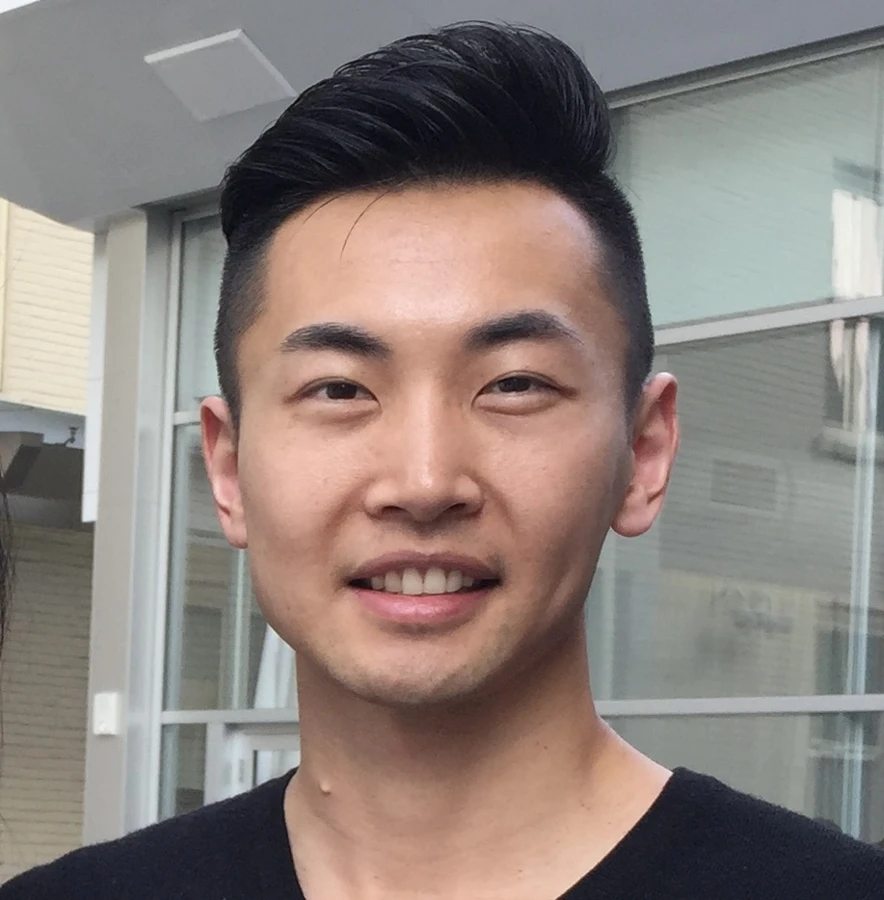

School of Chemical Engineering Department of Bioproducts and Biosystems
Scroll to discover
From molecular complexity to infinite possibility
Separate the components. Unlock their value.
Plant biomass is the most abundant form of biogenic carbon on earth. It's made of cellulose, hemicellulose, and lignin together in a complex structure. We study how solvent environments help us to isolate and capture these components so they can be transformed into cost-efficient bioproducts and renewable liquid fuels.
We advance CELFCo-solvent enhanced lignocellulosic fractionation
Conceptual illustration of biomass fractionation. Inspired by published molecular research; not simulation data.
01 / Research
Improve the use of each component.
We connect biomass deconstruction with applied chemistry, materials science and chemical process design to give each component a new purpose in a future bioeconomy.
01
Biomass fractionation
Solvent-enabled deconstruction, CELF pretreatment and molecular understanding of biomass. Recovering cellulose, sugars and lignin from agricultural and forestry residues.
New uses for lignin and cellulose, from polyurethane foams and dye adsorbents to pulp for textiles. Linking fractionation chemistry to material performance.
Fermentation and catalytic upgrading of biomass-derived intermediates. Evaluating integrated routes to renewable fuels through economics and life-cycle assessment.
Established at Aalto University in 2026, our biomass refining research group is led by Charles Cai.

Group leader
Charles Cai
Tenured Associate Professor Sustainable Bioproducts and Processes
Charles develops technologies that convert plant biomass into fuels and functional materials. He is the inventor of the patented CELF process and previously held a research professorship at the University of California, Riverside.